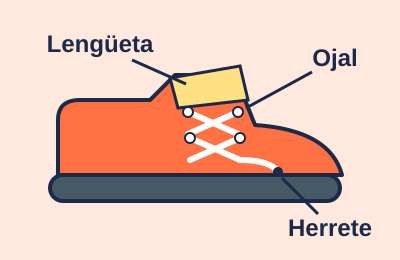

Lección 1 de 3: Partes del cordón
Mira el video
En el video se muestra un zapato de cerca. Una mano toca los ojales, la lengüeta y la punta del cordón mientras una voz dice cada nombre.

Lee y aprende
Antes de amarrar, conoce tu zapato. El cordón es la cuerda que pasa por los huecos. Los huecos se llaman ojales. La punta dura de cada extremo se llama herrete. La tela que queda debajo del cordón se llama lengüeta. Toca cada parte con tus dedos y di su nombre en voz alta.
Paso a paso
- Mira tu zapato con atención.
- Toca los ojales: son los huecos por donde pasa el cordón.
- Toca el herrete: es la punta dura de cada lado del cordón.
- Toca la lengüeta: es la tela que queda debajo del cordón.